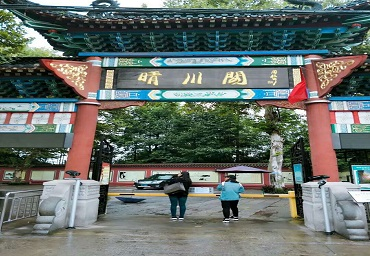

黄鹤楼
黄鹤楼位于湖北省武汉市长江南岸的武昌蛇山之巅，为国家5A级旅游景区，享有“天下江山第一楼“、”天下绝 景“之称。黄鹤楼是武汉市标志性建筑，与晴川阁、古琴台并称“武汉三大名胜”。黄鹤楼始建于三国时代吴黄武 二年（公元223年）。唐代诗人崔颢在此题下《黄鹤楼》一诗，李白在此写下《黄鹤楼送孟浩然之广陵》，历代文人 墨客在此留下了许多千古绝唱，使得黄鹤楼自古以来闻名遐迩。黄鹤楼坐落在海拔61.7米的蛇山顶，京广铁路的列 车从楼下呼啸而过。楼高5层，总高度51.4米，建筑面积3219平方米。黄鹤楼内部由72根圆柱支撑，外部有60个翘角 向外伸展，屋面用10多万块黄色琉璃瓦复盖构建而成。 黄鹤楼楼外铸铜黄鹤造型、胜像宝塔、牌坊、轩廊、亭阁等 一批辅助建筑，将主楼烘托得更加壮丽。主楼周围还建有白云阁、象宝塔、碑廊、山门等建筑。整个建筑具有独特 的民族风格，散发出汉族传统文化的精神、气质、神韵。它与蛇山脚下的武汉长江大桥交相辉映；登楼远眺，武汉 三镇的风光尽收眼底。晴川阁
晴川阁是湖北省重点文物保护单位。位于武汉城内汉阳龟山东麓长江边的禹功矶上。晴川阁始建于明代嘉靖年间， 其名取自唐代诗人崔颢诗句"晴川历历汉阳树"。有"楚四名楼"之誉。因与对岸黄鹤楼隔江对峙，相映生辉，被称为" 三楚胜境"。曾多次被毁，现阁系按清光绪年间式样于1985年重建，占地386平方米，高17.5米。其底层面阔5间，进 深4间；顶层面阔3间，进深2间。麻石台基，红墙朱柱，重檐歇山顶黑筒瓦屋面，钢筋混凝土仿木结构，门窗栏杆为 木质，朱漆彩绘。屋面四角向外伸出，深出檐，高起翘。正面牌楼悬挂"晴川阁"金字巨匾。其北侧为"园中园"，园中 青草如茵，竹木葱茏，瘦石嶙峋，幽静雅致。禹稷行宫并立于晴川阁西南侧，原名禹王庙，始建于南宋绍兴年间， 也曾数度毁坏。现存建筑为清同治三年(1864)重修。占地350平方米。其建筑为硬山式砖木结构，带墀头布瓦屋顶， 屋脊微呈凹形曲线。